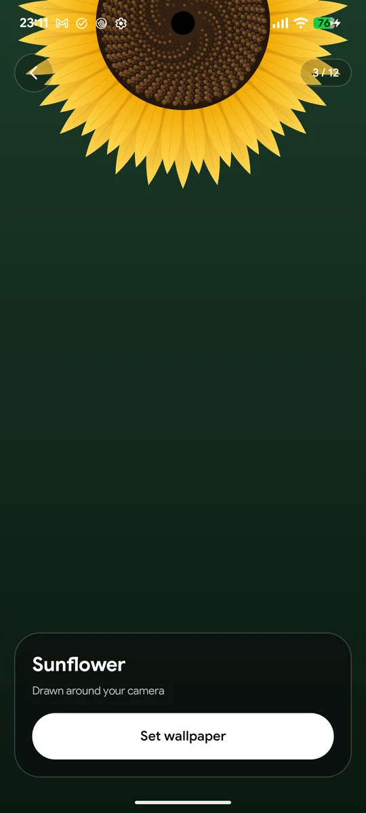
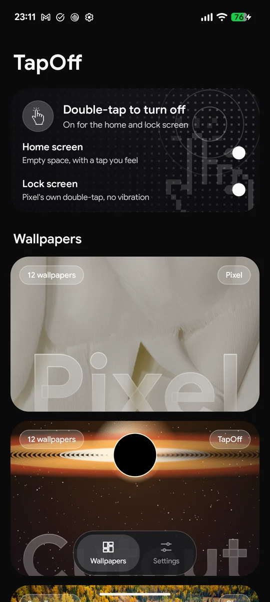
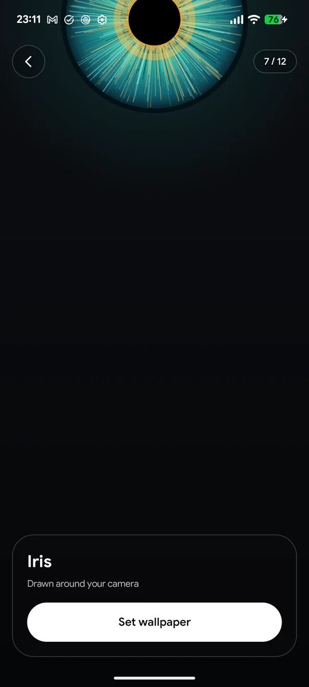

For Android phones with a worn-out power button, a case that makes it hard to press, or a thumb that's just tired of reaching. Double-tap empty space on your home or lock screen and the screen goes dark.



Small app, one job done properly, plus a wallpaper browser you'll actually open.
Tap empty space twice and the screen fades off, with a tap you feel.
On Pixels, one switch turns on Android's own lock-screen double-tap. No vibration.
Banking apps block phones with accessibility on. TapOff's is off, except for the second it turns the screen off.
12 designs drawn live around your camera hole: a black hole, a galaxy, a keyhole, a vinyl record and more.
Pixel's own, today's Bing photo, hand-picked art, or your own photo, on home and lock screen at once.
Screen off and Volume, one swipe down from anywhere.
Five minutes, once. The last step needs a computer for about a minute.
Download TapOff.apk on your phone and open it. Allow your browser to install apps when Android asks.
Open TapOff, go to Settings, tap Set TapOff as home wallpaper and choose Home screen and lock screen. The double-tap works through the wallpaper, so this part matters.
adb shell pm grant com.taseen.tapoff android.permission.WRITE_SECURE_SETTINGS
To turn the screen off, Android needs an accessibility service. Leaving one on blocks many banking apps, so TapOff switches its own on for a second and off again. Only a computer can grant the permission that allows that. Without it the app still works as a wallpaper browser.
The code is open for anyone to read. TapOff reads nothing on your screen, has no accounts or analytics, and only goes online to download wallpapers.
The home-screen double-tap works with launchers that pass taps on empty space to the wallpaper, which includes Pixel Launcher and most launchers based on it. The lock-screen switch uses a Pixel feature. Built and tested on a Pixel 7 running Android 17.
Message @taseen_tariq_ on X. If you can't send a DM, reply to any post, or open an issue on GitHub.